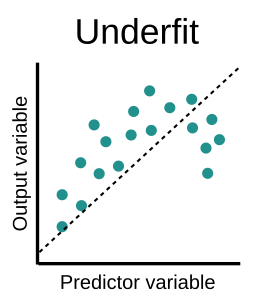

Medidas de qualidade de ajuste
LECON/DEST - UFES
Última atualização: 20 junho, 2023
Motivação
Consideremos o seguinte modelo \[Y=f(\mathbf{x}_1,\mathbf{x}_2,\ldots,\mathbf{x}_k)+\mathbf{\epsilon},\] onde \(f(\cdot)\) é uma função desconhecida. O objetivo será estudar a relação entre a variável dependente e as variáveis independentes, i.e., estimar (treinar) a função \(f(\mathbf{x})\), onde \(\mathbf{x}=(\mathbf{x}_1,\mathbf{x}_2,\ldots,\mathbf{x}_k)\).
Quando \(Y\) é quantitativa, temos um problema de regressão. Por outro lado, quando \(Y\) é qualitativa temos um problema de classificação.
- \(Y\) é chamada de variável resposta ou rótulo (label em inglês);
- \(\mathbf{x}_1,\mathbf{x}_2,\ldots,\mathbf{x}_k\) são chamadas de variáveis explicativas, covariáveis ou atributos (features em inglês);
Motivação
No caso do modelo de regressão, temos que \[Y=\beta_0\mathbf{1}+\beta_1\mathbf{x}_1+\beta_2\mathbf{x}_2+\cdots+\beta_k\mathbf{x}_k+\mathbf{\epsilon}\] ou
\[\begin{align*}
\left[
\begin{array}{c}
Y_1 \\
Y_2 \\
\vdots\\
Y_n
\end{array}
\right]_{n\times1}&=
\left[
\begin{array}{ccccc}
1&x_{11}&x_{12}&\cdots&x_{1k} \\
1&x_{21}&x_{22}&\cdots&x_{2k} \\
\vdots&\vdots&\vdots&\ddots&\vdots\\
1&x_{n1}&x_{n2}&\cdots&x_{nk} \\
\end{array}
\right]_{n\times (k+1)}
\left[
\begin{array}{c}
\mathbf{\beta}_0 \\
\mathbf{\beta}_1 \\
\vdots\\
\mathbf{\beta}_k
\end{array}
\right]_{(k+1)\times1}+
\left[
\begin{array}{c}
\mathbf{\epsilon}_1 \\
\mathbf{\epsilon}_2 \\
\vdots\\
\mathbf{\epsilon}_n
\end{array}
\right]_{n\times1}.
\end{align*}\]
Motivação
Dessa forma, no enfoque inferencial, para estimar a função \(f\) são necessárias um conjunto de suposições a respeito da natureza do dados, por exemplo, a linearidade. A linearidade sugere que a função de regressão é do tipo
\[r(\mathbf{x})=\mathbb{E}[\mathbf{Y}|\mathbf{X}=\mathbf{x}]=\beta_0+\beta_1\mathbf{x}_1+\beta_2\mathbf{x}_2+\cdots+\beta_k\mathbf{x}_k.\]
No enfoque inferencial, o principal objetivo é a interpretação dos parâmetros do modelo, testar as suposições do modelo e posteriormente fazer predição.
Já no enfoque algoritmico o principal objetivo é a previsão de novas observações. Dessa forma, não há modelo probabilístico explícito utilizado nos algoritmos, o modelo utilizado é só para criar algoritmos razoáveis para prever adeuqdamente as novas observações.
Para detalhes, vide Breiman (2001).
Função de risco
Primeiramente, para construir funções de predição razoáveis é necessário criar um critério para verificar o desempenho das mesmas.
Por exemplo, suponha que a sua função de predição é dada por \(g: \mathbb{R}^d\longrightarrow\mathbb{R}\). No contexto de regressão linear, geralmente, o desempenho é verificado usando a função de risco quadrática, i.e. \[\mathbb{E}\left[(Y-g(\mathbf{x}))^2\right].\] Dessa forma, quanto menor risco, melhor a sua função de predição.
A função de risco não é mais do que o valor esperado da função de perda. Em regressão, sabemos que a função de perda \(L\) pode ser representada pela função quadrática, i.e., \(L_2=(Y-g(\mathbf{x}))^2\), ou a função de perda absoluta, i.e., \(L_1=|Y-g(\mathbf{x})|\).
Princípio da parcimônia
Este princípio sugere que modelos mais simples devem ser escolhidos em detrimento dos mais complexos, desde que a qualidade do ajuste seja similar. É claro que devemos evitar excluir variáveis importantes apenas para manter um modelo simples.
Princípio da parcimônia
Sub-ajuste ou Underfitting
Neste cenário, o desempenho do modelo já é ruim no próprio treinamento. O modelo não consegue encontrar relações entre as variáveis e o teste nem precisa acontecer. Este modelo já pode ser descartado, pois não terá utilidade.
Super-ajuste ou Overfitting
Neste cenário, o modelo tem um desempenho excelente com os dados de treino, porém quando utilizamos os dados de teste o resultado é ruim. O modelo treinado não tem capacidade de generalização.

Medidas de qualidade de ajuste
Matriz de confusão
Antes de proceder para a escolha do “melhor” modelo, será necessário definir algumas métricas para decidir a bondade do ajuste.
Em problemas de classificação, uma matriz de confusão é uma tabela que permite a visualização do desempenho do algoritmo por meio das frequências de classificação das classes. A matriz de confusão contempla as seguintes situações:
Verdadeiro positivo ou True positive (TP): ocorre quando no conjunto real, a classe que estamos buscando prever foi prevista corretamente;
Falso positivo ou False positive (FP): ocorre quando no conjunto real, a classe que estamos buscando foi prevista incorretamente;
Matriz de confusão
Falso verdadeiro ou True negative (TN): ocorre quando no conjunto real, a classe que não estamos buscando prever foi prevista corretamente;
Falso negativo ou False negative (FN): ocorre quando no conjunto real, a classe que não estamos buscando prever foi prevista incorretamente.
Matriz de confusão
Exemplo 1 Considere os dados registrado na seguinte tabela

Dessa forma, o modelo previu \(1000\) grávidas corretamente e \(8000\) não-grávidas corretamente.
Acurácia
A acurácia (\(A\)) é a proporção de resultados corretos que o classificador alcançou. Ou seja, a razão entre as predições corretas pelo total. No exemplo anterior, seria o número de classificações corretas, dentre todos os pacientes.
\[\begin{align*}
A&=\frac{TP+TN}{TP+FP+TN+FN}\\ \\
&=\frac{1000+8000}{10000}=0.9
\end{align*}\]
Paradoxo da acurácia: Quando temos um grande desequilíbrio de classes, a acurácia não é muito adequada, pois o modelo, geralmente, fará previsões de acordo com a classe majoritária, obtendo bons resultados, mas será inútil no contexto do problema.
Precisão
A precisão, também chamada de Positive Predictive Value (\(PPV\)), é o número de verdadeiros positivos dividido pelo número de positivos estimados pelo modelo (verdadeiro positivo + falso positivo). Para o exemplo, temos:
\[\begin{align*}
PPV&=\frac{TP}{TP+FP}\\ \\
&=\frac{1000}{1000+800}=0.556
\end{align*}\]
Uma precisão de \(55.6\%\) pode parecer baixa, mas nesse cenário resulta mais grave diagnosticar uma paciente como não-grávida quando realmente está grávida.
Recall
O recall representa a proporção de verdadeiro positivo, dado que o estado verdadeiro é positivo. No exemplo, seria calcular a proporção dos pacientes diagnosticados como grávida, dado que consideramos só as pacientes grávidas.
\[\begin{align*}
Recall&=\frac{TP}{TP+FN}\\ \\
&=\frac{1000}{1000+200}=0.833
\end{align*}\]
Em outras palavras, quão bom é o modelo para prever positivos, sendo positivo entendido como a classe que se quer prever.
\(F_1\) score
Alguns modelos podem apresentar boa precisão, mas nem sempre um recall elevado, ou viceversa. Assim, se faz necessária uma medida que considere uma relação entre essas duas medidas, atribuindo, inclusive, o mesmo grau de importância para ambas. A função \(F_1\) score faz isso, ela considera a média harmônica entre a precisão e o recall, i.e.
\[F_1=2\times\frac{PPV \cdot Recall}{PPV + Recall}\]
O \(F_1\) score pode variar entre \(0\) e \(1\), quanto mais próximo de \(1\) melhor o modelo.
Para o exemplo anterior, temos que \(F_1=2\times\frac{0.556\times0.833}{0.556+0.833}=0.667\).
\(F_\beta\) score
O \(F_1\) score atribui pesos iguais tanto para a Precisão, quanto para o Recall. No entanto, dependendo do contexto, considerar o mesmo peso para tais quantidades, pode não ser adequado. Assim, o \(F_\beta\) score permite a escolha de um \(\beta\) que representa a influência da precisão no resultado final, i.e.
\[F_\beta=(1+\beta^2)\frac{PPV\cdot Recall}{\beta^2\cdot PPV + Recall}.\]
Por exemplo, \(F_{0.5}\) significa o peso para o Recall é maior.
As métricas anteriores visam entender o modelo sobre os dados positivos, i.e., no contexto do exemplo anterior, o objetivo é prever se a paciente está grávida, portanto será necessário fazer a leitura das métricas para avaliar essa classe.
Erro quadrático médio - EQM
Com o objetivo de avaliar o desempenho de um método de aprendizado estatístico em um determinado conjunto de dados, precisamos de uma ou mais medidas para quantificar o quão “precisas” estão as suas previsões com respeito aos dados observados.
No contexto de regressão linear, uma medida muito popular é o Erro Quadrático Médio (EQM), definido por \[EQM(g)=\frac1n\sum_{i=1}^n(Y_i-g(\mathbf{x}))^2.\] O EQM é um estimador muito otimista do risco real. Quando usado para selecionar modelos, o mesmo pode levar ao ajuste perfeito dos dados, i.e., super-ajuste (overfitting).
Divisão de dados ou data splitting
Um modo de resolver esse impasse é dividir o conjunto de dados em dois conjuntos: Treino e Validação.
O conjunto de treino é utilizado para estimar a função de predição \(g\);
O conjunto de validação é utilizado apenas para estimar o risco da função de predição, i.e., \(\mathbb{E}[(Y-g(\mathbf{x}))^2]\).
Para amostras aleatórias, uma prática comum para selecionar o conjunto de treino é realizar a escolha por amostragem aleatória simples (AAS). Dessa forma, uma porcentagem do conjunto de dados é reservada exclusivamente para treinamento e o restante para realizar a validação do modelo.
Para dados com estrutura de dependência, não resulta conveniente realizar a escolha por AAS. O conjunto de treino é selecionado com a porcentagem do conjunto de dados, preservando a ordem em que os dados foram observados.
Validação cruzada
Considerando uma função de perda \(L\), o risco pode ser aproximado por \[\hat{R}(g)=\frac{1}{n-s}\sum_{i=s+1}^nL(g(\mathbf{x_i}; Y_i)).\]
Uma alternativa para estimar a função de risco é o método de validação cruzada. A proposta do método é realizar o particionamento dos dados em diferentes formas, sendo as três mais utilizadas: o método Hold-Out, o \(k\)-Fold e o Leave-One-Out.
Validação cruzada - Hold-Out
Suponha que para uma amostra de tamanho \(n\) é selecionado um conjunto de treino de tamanho \(s\), dessa forma, o conjunto de validação será de tamanho \(n-s\).
Por exemplo: Suponha a amostra aleatória \((x_1,Y_1), (x_2,Y_2), \ldots, (x_n,Y_n)\). No caso da divisão simples, temos que \[\underbrace{(x_1,Y_1), (x_2,Y_2), \ldots, (x_s,Y_s)}_{Treino}, \underbrace{(x_{s+1},Y_{s+1}), (x_{s+2},Y_{s+2}), \ldots, (x_n,Y_n)}_{Validação}\]
Validação cruzada - Hold-Out
- Segundo Kohavi (1995), o estimador pelo método de hold-out é pessimista porque usa apenas uma parte dos dados como preditor do modelo;
- Quanto maior o número de observações para o conjunto de teste, maior será o viés do modelo. No caso de um conjunto de dados pequenos, por exemplo, deixar de usar uma parte pode causar uma grande distorção no modelo;
- Deixar poucas observações para o conjunto de treino aumenta a variância do estimador;
Validação cruzada - Leave-One-Out
O estimador utilizado para o risco é dado por
\[\hat{R}(g)=\frac1n\sum_{i=1}^n(Y_i-g_{-i}(\mathbf{x}_i))^2,\] onde \(g_{-i}(\cdot)\) representa a função de predição calculada utilizando todas as observações exceto a \(i\)-ésima, i.e., utilizando
\[(x_1,Y_1), (x_2,Y_2), \ldots, (x_{i-1},Y_{i-1}), (x_{i+1},Y_{i+1}), (x_{s+2},Y_{s+2}), \ldots, (x_n,Y_n)\]
Apesar de realizar uma avaliação completa sobre o desempenho do modelo, este método possui um alto custo computacional, sendo indicado para situações onde poucos dados estão disponíveis.
Validação cruzada - Leave-One-Out
- O estimador baseado no método Leave-One-Out é assintoticamente não-viesado para o erro esperado \(R(g)\), pois a amostra de treino é quase toda a amostra, principalmente quando \(n\) é grande;
- O método Leave-One-Out apresenta alta variabilidade, pois as parcelas de cada etapa possuem apenas uma única observação;
- Além disso, por treinar \(n\) vezes o modelo, o custo computacional desse método pode ser elevado se tivermos uma amostra muito grande.
Validação cruzada - \(k\)-Fold
O método consiste em dividir aleatoriamente o conjunto de dados em \(k\) subconjuntos disjuntos com aproximadamente o mesmo tamanho e, a partir daí, um subconjunto é utilizado para teste e os \(k-1\) restantes são utilizados para treinamento do modelo. Esse processo é realizado \(k\) vezes alternando de forma circular o subconjunto de teste.
A ideia do método \(k\)-fold é criar \(k\) estimadores da função de regressão, i.e., \(\hat{g}_{-1}, \hat{g}_{-2}, \ldots, \hat{g}_{-k}\), sendo \(\hat{g}_{-i}\) o estimador obtido usando todas as variáveis menos aquelas do lote \(i\). Dessa forma, o estimador do risco é dado por \[\hat{R}(g)=\frac1n\sum_{i=1}^k\sum_{j\in L_i}(Y_j-g_{-i}(\mathbf{x}_j))^2,\] onde \(L_1,L_2,\ldots,L_k\subset\{1,2,\ldots,n\}\) são os índices associados aos lotes.
Validação cruzada - \(k\)-Fold
- Note que, quando \(k = n\), temos o método Leave-One-Out;
- O viés do método \(k\)-fold diminui quanto maior o valor do \(k\). Porém, para um \(k\) muito grande, o custo computacional aumenta, além de implicar uma amostra de teste pequena, o que implica em um aumento da variância;
- Caso o tamanho da amostra seja pequeno, dividir os dados entre treino e teste se torna inviável. No caso específico do método \(k\)-fold, valores rezoáveis de \(k\) pode ser \(5\) ou \(10\) (vide, e.g. Kohavi (1995)). Sendo esses valores meras sugestões empíricas que tem-se mostrado adequadas na prática, mas sem nenhum sustento teórico formal.
- A validação cruzada não retorna um modelo pronto para utilizar no cenário sob estudo. A mesma retorna as métricas de cada subdivisão, ou seja, quão “bom” está o desempenho do modelo.
Validação cruzada
Entropia
No cotexto de modelagem, existem vários testes que ajudam a verificar se o modelo ajustado pode ser aceito para fins de inferência ou predição. Em relação à adequabilidade do ajuste, os testes podem ser classificados em três tipos:
Baseados em probabilidades empíricas, e.g., o teste de Kolmogorov-Smirnov;
Baseados em discrepâncias entre as frequências observadas e esperadas, e.g., Teste qui-quadrado, teste da razão de verossimilhança, entre outrso;
Baseados nos conceitos de entropia, e.g., a divergência de Kullback-Leibler, divergência de Jefreys, entre outros.
Na teoría Estatística, entropia pode ser definida como a quantidade de incerteza sobre uma distribuição ou sobre o parâmetro desta. O conceito de entropia está diretamente relacionado com a quantidade de informação sobre os parâmetros.
Entropia
Shannon (1948) sugeriu uma forma de medida de informação associada a uma função de densidade de probabilidade \(f(x)\), dada por \[E_s=-\int_{-\infty}^\infty f(x)\log f(x)\,dx.\] \(E_s\) é popularmente conhecida como Entropia de Shanon.
Kullback e Leibler (1951) generalizaram esse conceito de entropia da seguinte forma \[D_{KL}(g,f)=\mathbb{E}_{g}\left[\log\frac{g(x)}{f(x)}\right]=\int_{-\infty}^\infty g(x)\log\frac{g(x)}{f(x)}\,dx,\] onde \(g(x)\) e \(f(x)\) são funções de densidade definidas no mesmo espaço parâmetrico. A medida \(D_{KL}\) é chamada divergência de Kullback-Leibler.
Entropia
No contexto de modelagem, a divergência KL é usada para comparar diferentes modelos, i.e., \[D_{KL}(p||\hat{p})=\mathbb{E}_{p}\left[\log\frac{p(x)}{\hat{p}(x)}\right]=\int_{-\infty}^\infty p(x)\log\frac{p(x)}{\hat{p}(x)}\,dx,\] ou
\[D_{KL}(p||\hat{p})=\mathbb{E}_{p}\left[\log p(x)\right]-\mathbb{E}_{p}\left[\log \hat{p}(x)\right]\]
Na prática, o termo constante é irrelevante e só o segundo termo é considerado para as avaliações.
A divergência de KL não é simétrica e não satisfaz a desigualdade triangular, isso significa que, matematicamente, não pode ser considerada uma distância.
Critério de informação de Akaike - AIC
Suponha que \(f\) representa o modelo correto de um certo conjunto de dados. Considere então dois modelos candidatos, digamos, \(g_{1}\) e \(g_{2}\).
Na prática, não conhecemos o modelo \(f\), mas se o conhecêssemos, poderíamos determinar a perda de informação através da divergência de Kullback-leibler, digamos, \(D_{KL}(f||g_{1})\) e \(D_{KL}(f||g_{2})\) respectivamente, e escolher o que minimiza a perda de informação. Como o modelo correto não é conhecido, não podemos determinar tais medidas.
Akaike (1974) propôs uma solução, mostrando que, contudo, podemos estimar o quanto de informação é perdida ao se utilizar \(g_{1}\) e \(g_{2}\).
Critério de informação de Akaike - AIC
O \(AIC\) define-se como
\[AIC = -\log\hat{p}(x)-2k,\] onde \(\log\hat{p}(x)\) representa a log-verossimilhança e \(k\) o número de parâmetros no modelo. Dado um conjunto de modelos candidatos, aquele modelo com menor \(AIC\) será o selecionado. O \(AIC\) bonifica a qualidade de ajuste e penaliza a quantidade de parâmetros do modelo.
O termo \(2k\) é o termo de penalidade e seu papel é compensar pelo viés na falta de ajuste quando os estimadores de máxima verossimilhança são usados;
O \(AIC\) é assintoticamente eficiente, mas o desempenho do critério pode ser comprometido quando o tamanho de amostra é pequeno.
Critério de informação de Akaike corrigido - AICc
Para tamanhos amostras pequenos é aconselhável utilizar uma correção o critério, chamado de \(AICc\), dado por \[AICc=AIC+\frac{2k^2+2k}{n-k-1}.\]
Se o tamanho da amostra for suficientemente grande com respeito ao número de parâmetros, essa correção é desprezível e o \(AIC\) deve ter um bom desempenho
Resultados empíricos sugerem que o \(AICc\) é aconselhado quando \(\frac{n}{k}<40\). Por outro lado, se \(\frac{n}{k}\) é suficientemente grande, o \(AICc\) e o \(AIC\) apresentam resultados semelhantes, em outras palavras, se \(n\to\infty\), então \(AICc\to AIC\), onde \(n\) representa o tamanho de amostra.
Critério de informação bayesiano - BIC
O BIC é baseado na avaliação de modelos definidos em termos da probabilidade a posteriori. Dessa forma, se \(p(x)\) é o modelo estatístico estimado pelo método de máxima verossimilhança, então
\[BIC=-2\log\hat{p}(x)+k\log n,\] o \(k\) é o número de parâmetros do modelo e \(n\) representa o tamanho de amostra.
Critério de informação de Hannan-Quinn - HQ
O HQ é uma medida de adequação de um modelo estatístico e frequentemente usado como uma alternativa ao \(AIC\) e \(BIC\) para selecionar um modelo a partir de um conjunto finito de modelos. O HQ é dado por
\[HQ=-2\log\hat{p}(x)-2k\log(\log n).\]
Curva ROC
A curva \(AUC\) - \(ROC\) é uma medida de desempenho para os problemas de classificação em várias configurações de limite. \(ROC\) (Receiver Operating Characteristics) é uma curva de probabilidade e \(AUC\) representa o grau ou medida de separabilidade. Diz o quanto o modelo é capaz de distinguir entre as classes.
Um modelo “excelente” tem \(AUC\) próximo de \(1\), o que significa que tem uma boa medida de separabilidade. Um modelo pobre tem um \(AUC\) próximo a \(0\), o que significa que ele tem a pior medida de separabilidade.
Referências
Akaike, H. (1974), “A new look at the statistical model identification”, IEEE Transactions on Automatic Control, 19, 716–723.
Breiman, L. (2001), “Statistical Modeling: The Two Cultures (with comments and a rejoinder by the author)”, Statistical Science, Institute of Mathematical Statistics, 16, 199–231.
Kohavi, R. (1995), “A Study of Cross-Validation and Bootstrap for Accuracy Estimation and Model Selection”, em Proceedings of the 14th International Joint Conference on Artificial Intelligence - Volume 2, IJCAI’95, San Francisco, CA, USA: Morgan Kaufmann Publishers Inc., p. 1137–1143.
Kullback, S., e Leibler, R. A. (1951), “On Information and Sufficiency”, The Annals of Mathematical Statistics, 22, 79–86.
Shannon, C. E. (1948), “A Mathematical Theory of Communication”, Bell System Technical Journal, 27, 379–423.
Política de proteção aos direitos autorais
O conteúdo disponível consiste em material protegido pela legislação brasileira, sendo certo que, por ser o detentor dos direitos sobre o conteúdo disponível na plataforma, o LECON e o NEAEST detém direito exclusivo de usar, fruir e dispor de sua obra, conforme Artigo 5o, inciso XXVII, da Constituição Federal e os Artigos 7o e 28o, da Lei 9.610/98. A divulgação e/ou veiculação do conteúdo em sites diferentes à plataforma e sem a devida autorização do LECON e o NEAEST, pode configurar violação de direito autoral, nos termos da Lei 9.610/98, inclusive podendo caracterizar conduta criminosa, conforme Artigo 184o, §1o a 3o, do Código Penal. É considerada como contrafação a reprodução não autorizada, integral ou parcial, de todo e qualquer conteúdo disponível na plataforma.

Material elaborado pela equipe LECON/NEAEST: Alessandro J. Q. Sarnaglia, Bartolomeu Zamprogno, Fabio A. Fajardo, Luciana G. de Godoi e Nátaly A. Jiménez.